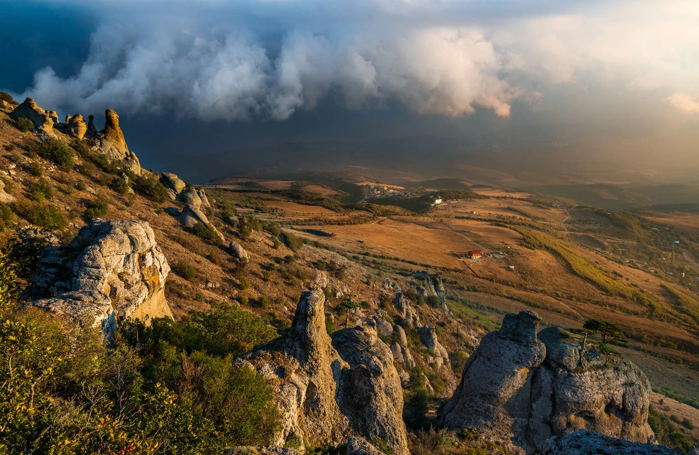

Свой нынешний вид «Ласточкино гнездо» получило благодаря немецкому нефтяному промышленнику барону П. Л. Штейнгелю, который любил отдыхать в Крыму. Штейнгель приобрёл на Аврориной скале дачный участок и решил построить там романтический замок, который напоминает средневековые сооружения на берегах Рейна. Проект нового дома в 1911 году был заказан инженеру и скульптору Александру Шервуду, сыну архитектора Владимира Шервуда.
В административном отношении относится к Ялтинскому городскому округу Крыма. Высота горы 1234 м. Различают Главную (1234 м), Западную и Восточную (1100 м) вершины Ай-Петри. Силуэт горы завершает линию живописного амфитеатра от самого моря — мыса Ай-Тодор с Ласточкиным гнездом — до знаменитых фигурных зубцов. Зубцы Ай-Петри состоят из четырёх крупных (высотой 60-80 м) и ряда мелких выступов на гребне, образовавшихся при выветривании неоднородных рифовых известняков.
В северной части Алуштинской долины расположена одна из красивейших гор Южного берега — гора Демерджи («Кузнец-гора»). В давние времена гора называлась Фуна, что значит «дымящаяся». Такое же название имела крепость, расположившаяся у западного склона горы. Мимо средневековой крепости проходит тропа экскурсионного маршрута в Долину Привидений, поражающую своим необычным ландшафтом.
Формы скал обусловлены выветриванием верхнеюрских конгломератов южной Демерджи. Своими формами каменные фигуры напоминают фигуры людей, животных, загадочных существ, предметов и, в зависимости от времени суток и освещения, их образы меняются, давая наблюдателям почву для фантазии.
